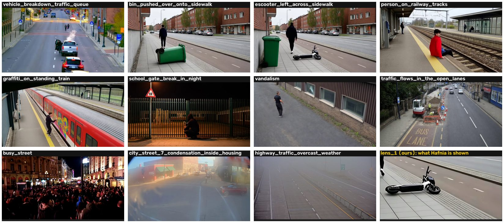
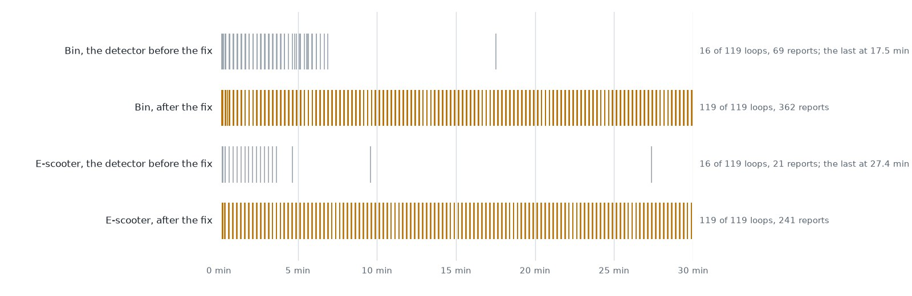
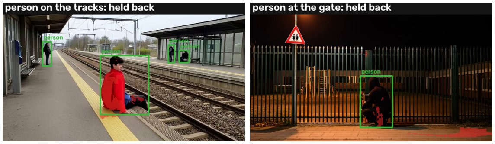
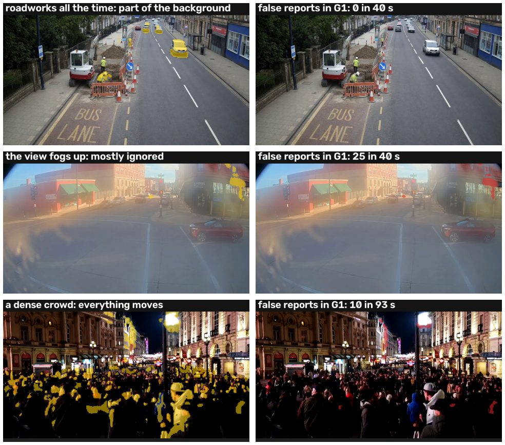
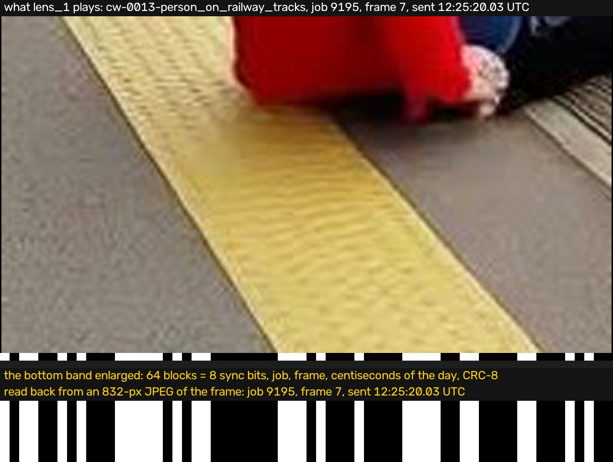
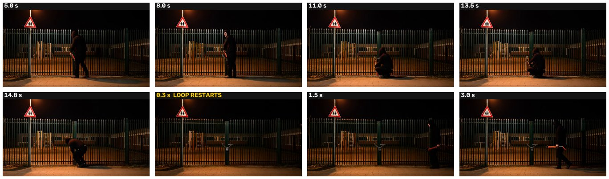
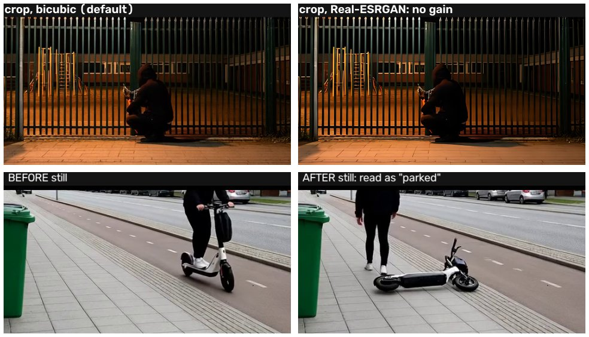
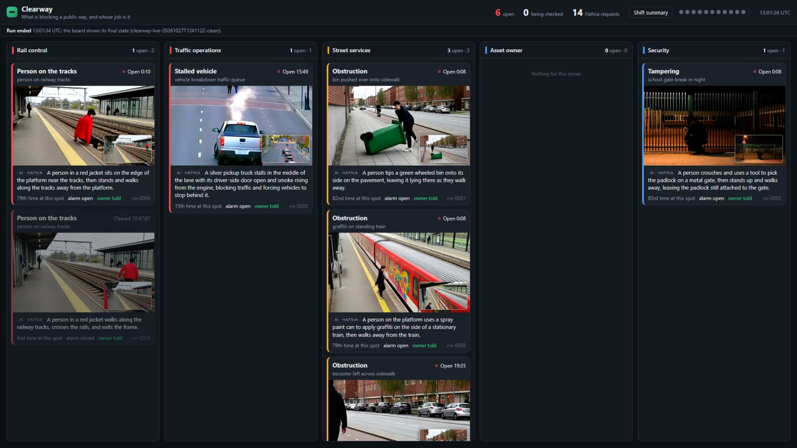
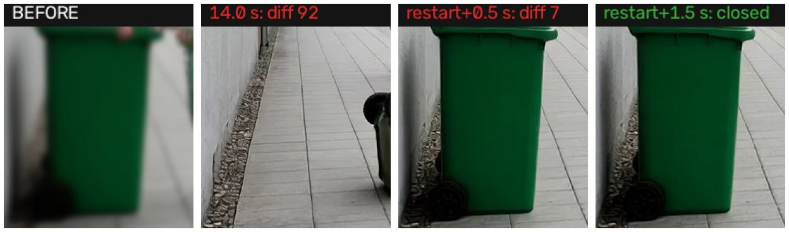
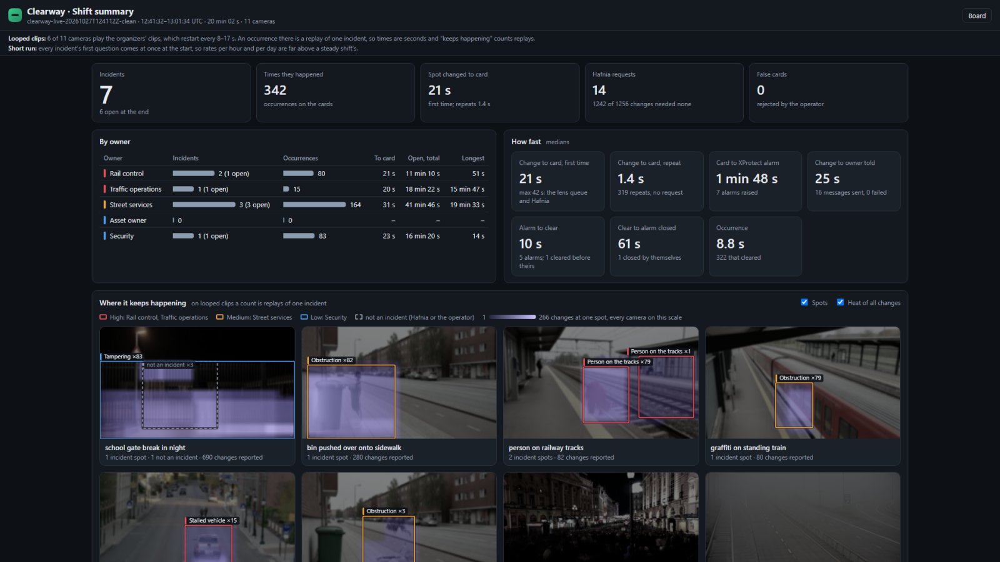

How Clearway decides
What is blocking a public way right now, whose job is it, and how long has it been there? Every camera is watched for free. The Hafnia VLM is asked once per incident and shown the moment and the spot. One incident is then one XProtect alarm, one card on the board of the team responsible for it (its owner) and one push to that team's phone, and the operator's Confirm or Reject teaches the system. Each step below is a claim, a figure from the real cameras and the numbers behind it.
flowchart TD
%% Clearway: how a live frame becomes one incident, and what teaches the system (state 2026-10-28).
%% Rendered in docs/walkthrough/index.html (the same text); GitHub renders it inside a ```mermaid fence.
CAM["XProtect cameras: live frames at 10 fps through our MIP SDK reader, FrameBridge"]
CAM --> CD["Change detector: something changed and stayed changed; people held back, whole-view changes ignored"]
CAM --> ZONE["Danger zone: a person's feet on the track bed for 1 s"]
CD --> LOOK["The spot's fingerprint: a SigLIP 2 embedding, free"]
ZONE --> LOOK
LOOK --> LED{"Incident memory: known at this spot?"}
LED -- "part of an open incident" --> JOIN(["joins it: no request"])
LED -- "looks like an incident open or cleared within the hour" --> RECUR(["recurrence: no request; the incident counts it, a closed alarm reopens"])
LED -- "looks like what Hafnia or the operator rejected here" --> HOLD["on hold: no request"]
HOLD -- "still there after 30 s" --> Q
LED -- "new" --> Q["a request: the clip around the change, 2 s before to 3 s after, cropped to the spot"]
Q --> SIZE{"would the magnifier camera enlarge it 2.5x or more?"}
SIZE -- "no" --> DIRECT["asked on the camera's own recording"]
SIZE -- "yes" --> LENS["played enlarged on the magnifier camera lens_1; the recorded seconds read back from the code in its frames; played again after a hole"]
DIRECT --> HAF["Hafnia VLM: one request, a JSON answer (category, summary, still present)"]
LENS --> HAF
HAF -- "NONE" --> REJ["rejected at this spot: remembered; the detector lets the spot into the background"]
HAF -- "a category" --> CARD["one incident: its owner (the team responsible) and its priority from the category"]
CARD --> OUT["an XProtect alarm with a snapshot and bookmarks; a card on the owner's board; a push to the owner's phone"]
OUT --> OP{"Operator: Confirm or Reject, on the board or the phone"}
OP -- "Reject" --> REJO["alarm closed; the incident's fingerprints rejected at its spot; later answers about it join the incident"]
OP -- "Confirm" --> CONF["alarm In progress; Hafnia's rejections here that look like the incident are overruled"]
CD -- "the spot looks as before again" --> CLEAR["cleared: the alarm closes after 60 s, no request"]
REJ -.-> LED
REJO -.-> LED
CONF -.-> LED
CLEAR -.-> LED
The same diagram is flow.mermaid beside this page (rendered here with Mermaid from a
CDN; without a network connection the source text shows instead). Solid arrows: a frame on its way to an alarm.
Dotted arrows: what changes the memory, so that the next change at the spot is decided differently.
The cameras
builtEleven XProtect cameras play the organizers' clips on a loop at 10 frames per second; a clip restarts every
8 to 17 seconds, so each staged incident happens again and again. Six of them show incidents in public ways: a
breakdown, a tipped bin, an e-scooter left on the pavement, a person on the tracks, graffiti on a train and a
break-in at a school gate; five show ordinary streets. The last tile is lens_1, our magnifier
camera: a camera of our own whose video we render, so that Hafnia gets to see a close-up. Our live-frame
reader, FrameBridge, a small program of ours on Milestone's MIP SDK, brings every camera's live frames to the
service at 832 pixels wide; the change detector looks at every second frame, which is all it needs and what
keeps the machine's four cores from starving the video system (step 11).

The change detector notices that something changed and stayed changed
builtTwo background models run on every frame. A slow one remembers how the scene looked minutes ago; a fast one follows it within half a second. A pixel that differs from the slow model but not from the fast one belongs to something that arrived and stopped, or to something that left. When a region stays that way for 1.5 seconds and no person stands in it, it is reported with the time it started changing. There are no object classes and no per-camera rules: the detector has never been told what a bin is.

A lasting change has to stay a change. The slow background learns wherever nothing moves, and until 2026-10-27 that included the obstruction itself: within minutes it belonged to the scene, and the three-hour shift on Oct 26 saw its looped incidents reported in the first half hour and hardly after. Three general fixes: an open change's spot is kept out of the slow background; pixels that are static and changed but not reported yet (a person standing still, an object settling) are not learnt for 60 seconds, so that the next change at the spot does not carry a ghost of them in its "before" snapshot; and "restored" is judged against the change's own contrast. A change that was judged harmless is released into the background instead (step 13).

run/change-fade-before, run/change-fade-after3). Before the fix: 16 of 119 loops
caught on each camera, nearly all in the first seven minutes, with a stray report or two later. After: every loop,
reports steady to the end, and 357 of the bin's 362 changes closed by themselves when the loop restarted.A person is not an obstruction
held backdanger zonestaying at a spotA change that a person stands in is held back until they leave: someone pausing on the pavement is not an obstacle, the scooter they leave behind is. The two incidents that are people get their own treatment. The tracks camera has a danger zone, the only per-camera setting: everything beyond the platform's yellow tactile strip. A person's feet (the bottom of the YOLO box, at 5 frames per second) inside it for one second is reported like a change, in every loop. The gate's break-in is a person who stays at one spot; that trigger is not built, and the gate's incident comes from the change the detector sees at the gate once the person's hold-back lets it through.

What it must not report
measuredRoadworks that are there all the time belong to the background. A camera fogging up changes most of the view at once, which the detector ignores as a whole-view change, though its edges still slip through. A dense crowd moves all the time, but people standing still for a moment cause false reports at the short setting used for the 15-second loops. On real cameras, where an obstruction lasts minutes, the detector waits 15 seconds instead. In the 20-minute live run the five street cameras produced no incident; the three-hour shift's four false incidents came from the lens recording's clock (step 7), not from the detector.

| Camera | Short-loop setting (1.5 s) | Real-camera setting (15 s) |
|---|---|---|
| Roadworks | 0 in 40 s | – |
| Camera fogging up | 25 in 40 s | out of scope: camera status |
| Dense crowd | 10 in 93 s | 0 |
| Real busy streets (Mumbai, Düsseldorf) | – | 14 to 125 per hour |
The incident memory: one incident, many changes
builtEvery reported change gets a fingerprint from SigLIP 2, an image model that runs on the machine's GPU in milliseconds, and goes to the incident memory, which decides without a request wherever it can, in this order. A change that overlaps a change already active in an incident is part of it (the detector reports a tipped bin as its empty place, the bin and its base). A change at the spot of an incident that is open, or cleared within the hour, and that looks like it (similarity 0.85 or more) is a recurrence: the incident counts it, a closed alarm reopens. A change that looks like what Hafnia or the operator rejected at that spot is put on hold: no request, and if it is still there after 30 seconds it is asked about after all, because on a real street a crashed car and a car that merely stopped can look alike while the harmless one leaves. Everything else is a request. Spot alone is not enough: an incident often comes to rest where something harmless was before.

The magnifier camera shows Hafnia the moment and the spot
builtHafnia can only read video that XProtect recorded. A request covers the clip around the change, from 2 seconds
before it started to 3 seconds after it was reported, so the outcome is in it, cropped to the spot. A large
spot, one the magnifier would enlarge less than 2.5 times, is asked about on the camera's own recording over
those seconds: no queue and the camera's own clock. A small one is rendered as a short clip, played enlarged
on our own camera lens_1, the magnifier (the lens, for short), through a local video stream, and
Hafnia is asked about that recording.

lens_1 plays. For things close to the camera, such as the bin, the crop is nearly the whole
frame, so they are asked about directly; for small, distant things it is a real close-up.The lens proves which seconds it showed
builtHafnia is asked about a camera and a span of recorded time, so the lens must know when its recording holds
the clip. At first that was assumed from the publisher's clock, and under the eleven-camera load the
recording's time ran 0.3 to 9.5 seconds behind it: the publisher dropped frames when the busy machine held it
up, and ffmpeg stamped the frames it did send by count. Four of the three-hour shift's six wrong answers had judged a
neighbouring clip. Now the publisher stamps frames with the wall clock and burns a code into every frame.
lens_1's own frames come back through FrameBridge with the Recording Server's times; the service
reads the code from them and measures each clip's recorded span from its own frames. A span is verified when
frames from the clip's first and last quarters were seen, the drift is under a second, and no neighbouring
clip and no hole lies in it; a clip of which no frame arrived, or with a hole of a second, is played once
more.

Hafnia answers in a fixed format
builtEach question is one request. The prompt asks for JSON and defines each category in a few words, and since 2026-10-27 says what each category is not (an OBSTRUCTION is "not someone painting, breaking or forcing something"; NONE is "ordinary traffic, people walking, parked vehicles, a stationary train"). Hafnia was trained to answer in JSON. Code parses the answer and uses the category and whether the thing is still there; the category names the owner and the priority. The object's details are not trusted: Hafnia invents some, such as tool types.
| Camera | Category | Still there | Summary (crop view) |
|---|---|---|---|
| Breakdown | STALLED_VEHICLE | yes | A silver pickup truck stalls in the middle of the lane with its driver-side door open and smoke rising from the engine, blocking traffic as nearby vehicles slow and stop. |
| Bin | OBSTRUCTION | yes | A person tips a green wheeled bin onto its side on the pavement, leaving it lying there as they walk away. |
| E-scooter | OBSTRUCTION | yes | The electric scooter tips over onto the pavement and remains lying there as the rider dismounts and walks away. |
| Tracks | PERSON_ON_TRACKS | yes | A person in a red jacket crawls along the edge of the railway tracks, moving slowly forward while remaining on the tracks. |
| Graffiti | DAMAGE | yes | A person sprays colorful graffiti onto the side of a stationary train at the platform, then steps back and observes the completed artwork. |
| Gate | TAMPERING | yes | A hooded person crouches at a metal gate at night, using a tool to pry or force the latch, then pauses and resumes working on the lock. |
The category list steers the whole answer. On a real highway crash, with no crash category in the list, Hafnia answered STALLED_VEHICLE nine times and never mentioned the impact; with COLLISION in the list the crop of the crash says COLLISION while the full frame still says STALLED_VEHICLE, and the six synthetic incidents keep their categories.
Why the clip is centred on the event
measuredA clip that is not aligned with the event can start in the aftermath and end in the run-up. Hafnia then tells the story in the order of the frames, backwards. The gate camera over one full loop shows it.

Tested and left out
left outTwo ideas for showing Hafnia more were measured and gave nothing. A super-resolution model (Real-ESRGAN) sharpens the crop, but Hafnia's answers stayed the same word for word, also on a 30-pixel car in a real crash. Holding the spot's first and last frames as captioned BEFORE and AFTER stills made one answer worse: the lying scooter became "parked". Both stay in the code as options.

One alarm, one card, one push, for the team that owns it
builtThe category decides who gets the incident and how urgent it is. The control room gets an XProtect alarm on
the camera, named with the category and the owner, with Hafnia's sentence marked as AI-generated, a snapshot of
the spot and bookmarks on the camera and, for a cropped clip, on lens_1. The owner's team gets a
card in its column on the board: the clip Hafnia judged, playing; the summary; how long the spot has been
open; how many times at this spot; the alarm's state; Confirm and Reject. And the owner's phone gets a push
with the snapshot, the incident's priority (a person on the tracks rings through) and the same two buttons.
| Category | Owner | Alarm priority |
|---|---|---|
| PERSON_ON_TRACKS | Rail control | High |
| COLLISION, STALLED_VEHICLE | Traffic operations | High |
| OBSTRUCTION | Street services | Medium |
| DAMAGE | Asset owner | Low |
| TAMPERING | Security | Low |

With eleven cameras the alarm actions took 19 seconds each (the three-hour shift: up to a minute). The cause was our own CPU load, not XProtect's: the service and FrameBridge now run below normal priority, so that XProtect's services are scheduled first, and a raise takes a fifth of a second with the same cameras.
The alarm closes itself
builtEach change keeps a snapshot of how its spot looked before. The detector compares the spot with it on every frame, and when they match for a second the change closes; the incident clears when its largest change closes, without another request. Its alarm closes once it has stayed cleared for 60 seconds, so that a recurring incident keeps one alarm instead of closing and reopening it with every occurrence, and it reopens if the incident recurs within the hour. In the looped clip that happens when the loop restarts and the bin stands again; on a real street, when someone sets the bin back up.

The operator teaches it: Confirm and Reject
builtA verdict comes from the board (a button on the card) or from the phone (the push's buttons post a signed
verdict to a reply topic that the service follows; nothing reaches the machine from outside). Both land in the
run's operator.jsonl, which the service reads every second. Nothing is retrained. The incident
memory keeps, per camera and spot, the fingerprints it has judged (the SigLIP 2 embeddings of step 5, up to
eight per incident, kept diverse), and a verdict changes what those fingerprints mean there.
- Reject. The incident becomes rejected and its fingerprints are added to the rejections at its spot. The XProtect alarm closes with the reason, the owner's phone gets "stand down", and the detector is told to let the spot into the background, so the harmless thing becomes scenery and its leaving is not a change of its own. From then on a change at that spot that looks like the rejected incident (more than like any live one) is put on hold without a request. If it is still there after 30 seconds it is asked about after all; an answer that names the same category joins the rejected incident, no new card and no alarm, and its fingerprint joins the rejections; another category is a new incident. Answers already on their way when the verdict came join the rejected incident too.
- Confirm. The alarm goes to In progress with the operator's name on it. Hafnia's own rejections at the spot that look like the incident are overruled, so the next such change joins it as a recurrence instead of waiting on hold; the operator's rejections stand. A confirmed incident can be rejected later; a rejected one cannot be confirmed.
flowchart LR
V["Confirm or Reject on a card, on the board or the phone"] --> F["operator.jsonl, read every second"]
F --> D{"verdict"}
D -- "Reject" --> RJ["incident rejected; its fingerprints rejected at the spot; alarm closed; the spot released to the background"]
D -- "Confirm" --> CF["alarm In progress; Hafnia's rejections at the spot that look like the incident overruled"]
RJ --> N["the next change at that spot"]
CF --> N
N -- "looks like the rejected incident" --> H["on hold, no request; asked after 30 s if it stays, and the same category joins the incident"]
N -- "looks like the confirmed incident" --> J["joins the incident as a recurrence, no request"]
What it does not do: a verdict is bound to its camera and spot (a bus stop here, not everywhere); a look-alike on hold that stays costs a request after 30 seconds; and the verdicts live in the run's own memory, so a new run starts without them (keeping them across runs is on the list, step 15).
The shift summary, and where it keeps happening
builtAt the end of a shift, or at any moment during it, the board's summary page is built from the run's logs without a request: incidents by owner, how fast things went (from the change to the incident, from the incident to its alarm, from the alarm to clear), what the requests bought, the incidents the operator rejected, and each camera's hotspots: the memory's spots with their counts and the heat of every reported change, drawn over the scene as the detector remembers it, with the spots that were not incidents dashed. On the looped clips a count is a replay of one incident, and the page says so.

Not built, and what is next
to build- The application layer. The board is a page beside Smart Client and the phone gets a push with two buttons; both are thin. One window for the cards, the alarm state and the verdicts; split, merge, snooze and assign; a note with a verdict; the verdicts kept across runs; a topic per owner; Teams and Slack.
- The start-up burst. Every loop's first question comes at once when the service starts, and the one lens camera plays the clips in turn: that is where the 42–72 s incidents come from. Asking on the camera's own recording took the median from 104 s to 21 s; the rest is a second lens camera or a steadier start.
- Ambiguous small crops. The lying scooter's crop was called "a large tree branch" with the right category, and NONE with the negatives prompt: a second, wider view for a doubtful small crop.
- A map layer (XProtect Smart Map), a person staying at a spot (the gate), and the real highway
crash clip (
test_11) run live as a camera.